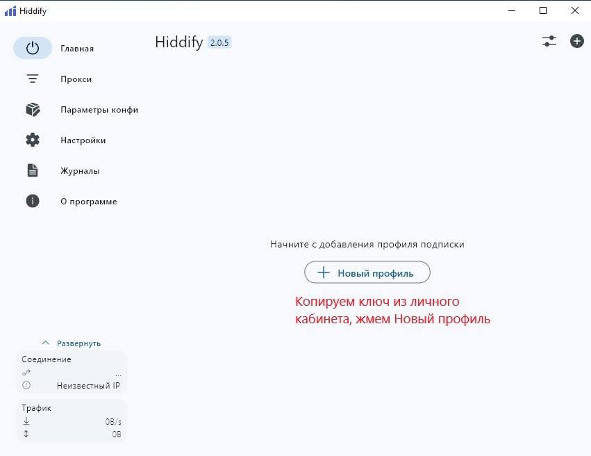

Инструкция для Windows
Чтобы использовать ключ VPN на Windows, следуйте этим шагам:
⛔️ Внимание! Требуется Windows 10 или новее.
- Скопируйте ваш VLESS ключ VPN из Telegram-бота в буфер обмена.
- Откройте приложение Hiddify от имени администратора.
Если у вас его нет – скачайте его из Microsoft Store:
Откройте Microsoft Store и найдите "Hiddify". Установите новую версию. - Нажмите на «Новый профиль», чтобы вставить ключ из буфера обмена. 
- Выберите Быстрые настройки → нажмите на VPN для включения режима.
- Готово! Нажмите «Подключиться».

⛔️ Если вы видите следующее сообщение:
Закройте приложение не через крестик — а вручную из трей (внизу справа), а затем заново запустите от имени администратора.
⛔️ Ошибка "Таймаут" — это не критично и не мешает работе VPN. Просто проигнорируйте её.